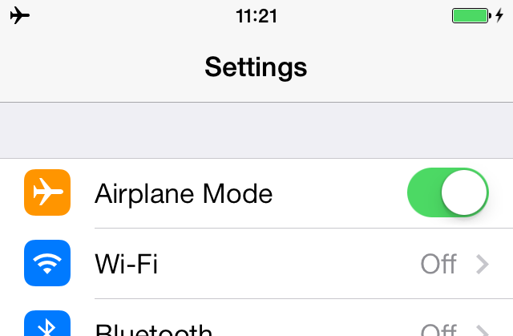
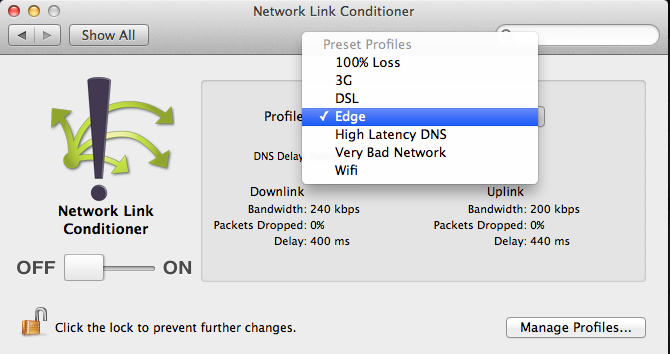
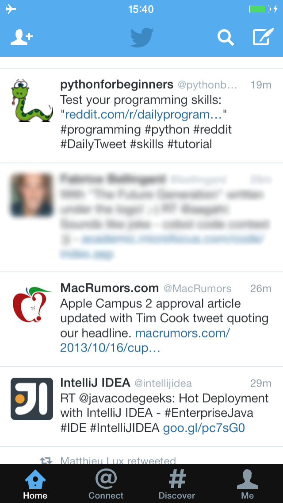
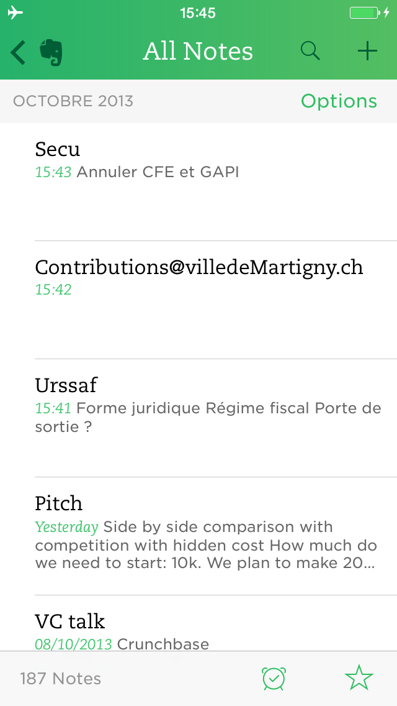
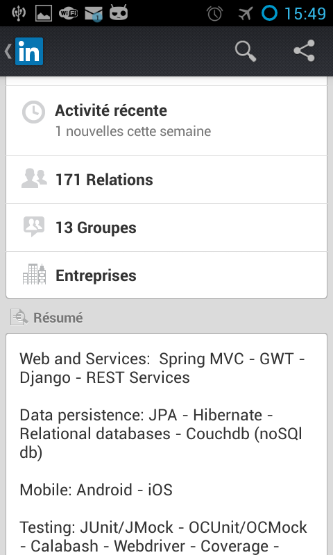
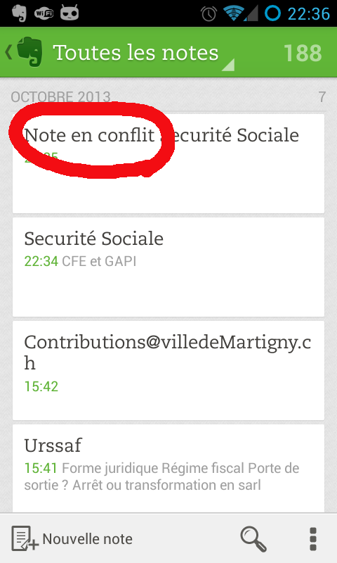

Let's take this offline
Comment faire une application qui fonctionne hors connexion ?
@


 ==Et vous ?==[title]
=Sujet de cette présentation=
* Des méthodes pour implémenter des applications en mode déconnecté
* Exemples:
** iOS
** REST API
** Django REST Framework
=Le code de la démo=
==Et vous ?==[title]
=Sujet de cette présentation=
* Des méthodes pour implémenter des applications en mode déconnecté
* Exemples:
** iOS
** REST API
** Django REST Framework
=Le code de la démo=
https://github.com/creynaud/notes-iphone-app https://github.com/creynaud/notes-server https://awesomenotes.herokuapp.com/api/ ==Qu'est-ce que j'entends par "fonctionner en mode déconnecté" ?==[title] =Pas de réseau ou un réseau lent=
 Photo by Danka Peter
=Pas de réseau ou un réseau lent=
Photo by James Evans
=Pas de réseau ou un réseau lent=
Photo by Danka Peter
=Pas de réseau ou un réseau lent=
Photo by James Evans
=Pas de réseau ou un réseau lent=
Un utilisateur ne devrait pas attendre pour relire du contenu auquel il a déjà accédé
=Pas de réseau ou un réseau lent=Un utilisateur devrait pouvoir poster du contenu à tout moment
==Pourquoi implémenter un mode déconnecté ?==[title] =L'application Facebook il y a un an=
==Pas vraiment l'expérience utilisateur qu'on souhaite avoir...==[title]
=On s'attend à toujours voir du contenu=



 =Les réseaux mobiles sont différents=
* La latence est élevée
* La vitesse est très variable, ce qui est le pire en terme d'expérience utilisateur
=Les réseaux mobiles sont différents=
* La latence est élevée
* La vitesse est très variable, ce qui est le pire en terme d'expérience utilisateur
"Faster Websites: Crash Course on Frontend Performance (Part 1/2)", Devoxx 2012 =Comment se comporte mon app en conditions réelles ?= ==Et si on réimplémentait Evernote ?==[title]
Enfin, juste la partie notes de texte ;)
=En 3 étapes= # Lire des notes en mode déconnecté # Créer des notes en mode déconnecté # Mettre à jour des notes en mode déconnecté et résoudre des conflits ==Une seule chose à retenir : versioner les objets notes !==[title] =Architecture d'une application mobile= =REST API= * GET /notes * GET /notes/{uuid} * POST /notes * PUT /notes/{uuid} * DELETE /notes/{uuid} ==1. Lire des notes en mode déconnecté==[title] Photo by Ilham Rahmansyah =Lire des notes en mode déconnecté=Lire les documents JSON depuis un cache local côté client
==HTTP a un mécanisme de cache, non ?==[title] =On a besoin d'un cache de plus haut niveau= * Si on veut faire des recherches en mode déconnecté * Ou si on veut faire de l'édition en mode déconnectéJ'ai choisi d'utiliser CoreData au-dessus de SQLite pour mon app d'exemple.
Selon les besoins, stocker le document JSON "brut" dans un store clé/valeur peut suffir. =Qu'est-ce qu'on garde du caching HTTP ?=
Par exemple, je ne veux pas télécharger la même version d'un document JSON si elle est déjà dans mon cache HTTP.
C'est possible avec les headers HTTP suivants : * Cache-Control * Etag et If-None-Match * ou Last-Modified et If-Modified-Since ==Le cache HTTP, en pratique, ça donne quoi ?==[title]
 =Cache HTTP GET avec ETAG=
Article de blog sur NSURLCache, les politiques de cache HTTP et les ETAG
==2. Créer des notes en mode déconnecté==[title]
Photo by Ilham Rahmansyah
=Créer des notes en mode déconnecté=
# Stocker le document JSON qui doit être posté (par exemple dans SQLite)
# Essayer de poster le document JSON vers le server en tâche de fond
# Marquer le document JSON comme posté avec succès seulement si le POST retourne OK
# En cas d'échec du POST, essayer à nouveau de poster le document JSON à la prochaine synchronization avec le serveur
==3. Résoudre des conflits lors de l'édition de notes==[title]
Photo by Ilham Rahmansyah
=Résoudre des conflits lors de l'édition=
=Cache HTTP GET avec ETAG=
Article de blog sur NSURLCache, les politiques de cache HTTP et les ETAG
==2. Créer des notes en mode déconnecté==[title]
Photo by Ilham Rahmansyah
=Créer des notes en mode déconnecté=
# Stocker le document JSON qui doit être posté (par exemple dans SQLite)
# Essayer de poster le document JSON vers le server en tâche de fond
# Marquer le document JSON comme posté avec succès seulement si le POST retourne OK
# En cas d'échec du POST, essayer à nouveau de poster le document JSON à la prochaine synchronization avec le serveur
==3. Résoudre des conflits lors de l'édition de notes==[title]
Photo by Ilham Rahmansyah
=Résoudre des conflits lors de l'édition=
Si vous laissez la possibilité à l'utilisateur d'éditer en mode déconnecté, des conflits vont se produire (même s'il n'y a pas d'édition multi-utilisateur).  ==La détection de conflit devrait être intégrée à l'API REST !==[title] ==La *détection*, pas la *résolution*==[title] ==Ça donne quoi dans l'API REST ?==[title]
==Et la synchronisation dans l'application ?==[title]
=Deux mots sur le back-end et l'API REST=

 =REST API=
* GET /notes-uuids
* GET /notes
* GET /notes/{uuid}
* POST /notes
* PUT /notes/{uuid}
* DELETE /notes/{uuid}
=Django REST framework=
* Ajouter un UUID et une révision dans les objets Note
* Rejeter les requêtes PUT ou DELETE si la révision n'est pas spécifiée (400 Bad request)
* Rejeter les requêtes PUT ou DELETE si la révision n'est pas la révision courante (409 Conflict)
* Ajouter le header ETAG
=REST API=
* GET /notes-uuids
* GET /notes
* GET /notes/{uuid}
* POST /notes
* PUT /notes/{uuid}
* DELETE /notes/{uuid}
=Django REST framework=
* Ajouter un UUID et une révision dans les objets Note
* Rejeter les requêtes PUT ou DELETE si la révision n'est pas spécifiée (400 Bad request)
* Rejeter les requêtes PUT ou DELETE si la révision n'est pas la révision courante (409 Conflict)
* Ajouter le header ETAG
Tout le reste est déjà fourni !
https://github.com/creynaud/notes-server =Résumé= * Ajouter un UUID et une révision dans tous les documents JSON * Lecture hors connexion: stocker les documents JSON en local côté client * Création hors connexion: poster vers le serveur en background et re-essayer en cas d'échec * Mise à jour hors connexion: gérer les conflits * Essayer de tirer profit du cache HTTP (headers Cache-Control, Etag et If-None-Match) == ==[title-slide]
Merci ! Questions ?
@Let's take this offline − 14/11/2013 - Claire Reynaud − Cocoaheads Lyon - /
← →